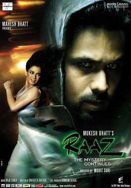
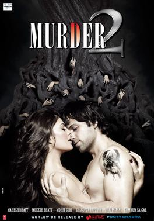
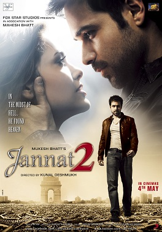

Kaisa Ye Raaz Hai
Hmm, raaton kee tanhai mein
Subahon kee parchaai mein, hey-hey-hey
Cheharaa hai kya ye meri aankhon mein?
Khushboo hai kya ye meri saanson mein?
Kaisa ye raaj hai jo ki khulata nahin?
Kyun mere zahan mein too hai, ai ajanabi? (ajanabi)
Hmm, hota hai jo savaalon mein
Milata nahin javaabon mein
Rahata hai jo khayaalon mein
Ab tak hai vo hijaabon mein
Hai dil ka ye kaisa mausam?
Naa dhoop hai, naa hai shabnam, o
Kaisa ye raaj hai jo ki khulata nahin?
Kyun mere zahan mein too hai, ai ajanabi? (ajanabi)
Raaton kee tanhai mein
Subahon kee parchaai mein, hey-hey-hey
Cheharaa hai kya ye meri aankhon mein?
Khushboo hai kya ye meri saanson mein?
Jaane hai kya sitaron mein
Gardish see hai ishaaron mein
Patjhad see hai bahaaron mein
Tufaan sa hai kinaaron mein
Dastak see hai kya ye har-dam
Aahat see hai kya ye har-dam, o
Kaisa ye raaj hai jo ki khulata nahin?
Kyun mere zahan mein too hai, ai ajanabi? (ajanabi)
Hale Dil

Ai kaash, kaash yoon hota
Har shaam saath tu hota
Chup chaap dil naa yoon rota
Har shaam saath tu hota
Guzaaraa ho tere bin guzaaraa
Ab mushkil hai lagtaa
Nazaaraa ho tera hi nazaaraa
Ab har din hai lagtaa
Haal-e-dil tujko sunaata
Dil agar ye bol paataa
Bakhuda tujko he chahta jaan
Tere sang jo pal bitaata
Vaqt se main vo maang laata
Yaad karke muskuraataa haan
Too meri raah ka sithaaraa
Tere binaa hoon main aavaara
Jab bhee tanhai ne sataaya
Tujko be saakhata pukaara
Chahat hai meri laa fanaa
Par meri jaan dil mein hoon rakhata
Haal-e-dil tujko sunaata
Dil agar ye bol paataa
Bakhuda tujko he chahta jaan
Tere sang jo pal bitaata
Vaqt se main vo maang laata
Yaad karke muskuraataa haan
Khwaabon kaa kab tak luun sahaara
Ab to too aa bhee ja khudaara
Meri ye donon paagal aankhen
Har pal maange tera nazaaraa
Samajhaaun inako kis tarah
Inpe mera bas nahin chalata
Haal-e-dil tujko sunaata
Dil agar ye bol paataa
Bakhuda tujko he chahta jaan
Tere sang jo pal bitaata
Vaqt se main vo maang laata
Yaad karke muskuraataa haan
Rab Ka Shukrana

Tu hai ab jo baahon mein, Qarar hai
Rab Ka Shukrana
Saanson mein hai nasha, Khumar hai
Rab Ka Shukrana
Tu hi ab mera deen hai, imaan hai
Rab Ka Shukrana
Mera kalma hai tu, Azaan hai
Rab Ka Shukrana
Rab Ka… …Shukrana
Tu mila toh sab mila
Ab kisi se kya gila
Tujhme simtu, aa main bikhru
Teri baahon mein….
Tu mila toh sab mila
Ab kisi se kya gila…
Tujhme simtu, aa main bikhru
Teri baahon mein fanaa ho jaaun main
Tu hi ab duniya meri, Jahaan hai
Rab Ka Shukrana
Khabon ki khayalon ki udaan hai
Rab Ka Shukrana
Tu hi ab mera deen hai, imaan hai
Rab Ka Shukrana
Mera kalma hai tu, Azaan hai
Rab Ka Shukrana
Sab se ho jaaun pare jo ishara tu kare
Abb toh rehna hai tujhi mein
Gumshuda hoon main
Sab se ho jaaun pare jo ishara tu kare
Abb toh rehna hai tujhi mein
Gumshuda hoon main
Ho teri baahon mein….
Jazbo ka toh naya bayaan hai
Rab Ka Shukrana
Naya rutba nayi shaan hai
Rab Ka Shukrana
Tu hi ab mera deen hai, imaan hai
Rab Ka Shukrana
Mera kalma hai tu, Azaan hai tu
Rab Ka Shukrana
Rab Ka…
Rab Ka…
Rab Ka… Shukrana
Bhula Dena

Bhula denaa muje hai alavida tuje
Tuje jeena hai mere bina
Safar ye hai tera ye raastaa tera
Tuje jeena hai mere bina
Hon teri saaree shoharatein hai ye dua
Tujhi pe saaree rahamatein hai ye dua
Tuje jeena hai mere bina
Bhula denaa muje hai alavida tuje
Tuje jeena hai mere bina
Tu hi he kinaaraa tera tu hi to sahaara tera
Too hee hai taraana kal ka too hee to fasaanaa kal ka
Khud pe yakin too karnaa bananaa too apana khuda
Tu hi he kinaaraa tera tu hi to sahaara tera
Too hee hai taraana kal ka too hee to fasaanaa kal ka
Khud pe yakin too karnaa bananaa too apana khuda
Fizaa kee shaam hoon main too hai naee subah
Tuje jeena hai mere bina
Tuje jeena hai mere bina
Khilengi jahaan bahaaren sabhee
Muje too vahaan paaegaa
Rahegee jahaan hamaari vafaa
Muje too vahaan paaegaa
Miloonga main is tarah vaadaa raha
Rahoonga sang main sada vaadaa raha
Tuje jeena hai mere bina
Bhula denaa muje hai alavida tuje
Tuje jeena hai mere bina
Tuje jeenaa hai haan mere binaa
Tum Ho Mera Pyaar
Jism se ruh tak hai tumhaare nishaan
Ban gaye toom meri zindagi
Jism se ruh tak hai tumhaare nishaan
Ban gaye toom meri zindagi
Jab se tum ho mili
Jaan o dil hai khile
Tumse vahabsta hai har kushi
Tum ho meraa pyaar tumse hai qaraar
Tumko hi basaaya maine yaado main
Tumse hai nasha tumse hai khumaar
Tumko hi sajaayaa maine khwaabon main
Tum ho meraa pyaar tumse hai qaraar
Tumko hi basaaya maine yaado main
Jab mili nahin the tum naa thi khushiyaan naa gam
Tum mili to badale zindagi ke ye mausam
Ho sun rahaa hai jo duwa meraa rab hai tujhme
Har jagah tha kuch kam mila mujhe sab tujh main
Raat din dekhnaa tujko aadat meri
You tuje chaahana hai ibaadaat meri
Tum ho meraa pyaar tumse hai qaraar
Tumko hi basaaya maine yaado main
Tumse hai nasha tumse hai khumaar
Tumko hi sajaayaa maine khwaabon main
Tum ho meraa pyaar tumse hai qaraar
Tumko hi basaaya maine yaado main
Jism se ruh tak hai tumhaare nishaan
Ban gaye toom meri zindagi
Ankhen sehara meri tu hai bhigaa ek badal
Meri khwishon main tu tere liye main pagal
O ho tum hai bahati nadi duba duba main sahil
Main hu tujh main phna tu hi meraa hai hasil
Jab se tu o sanam meri bahon main hai
Ek ujaalaa sa dil kii panaahon main hai
Tum ho meraa pyaar tumse hai qaraar
Tumko hi basaaya maine yaado main
Tumse hai nasha tumse hai khumaar
Tumko hi sajaayaa maine khwaabon main
Tum ho meraa pyaar tumse hai qaraar
Tumko hi basaaya maine yaado main
Tumse hai nasha tumse hai khumaar
Tumko hi sajaayaa maine khwaabon main
Tum ho meraa pyaar tumse hai qaraar
Tumko hi basaaya maine yaado main
Tumse hai nasha tumse hai khumaar
Tumko hi sajaayaa maine khwaabon main
Tum ho meraa pyaar tumse hai qaraar
Tumko hi basaaya maine yaado main
Tumse hai nasha tumse hai khumaar
Tumko hi sajaayaa maine khwaabon main